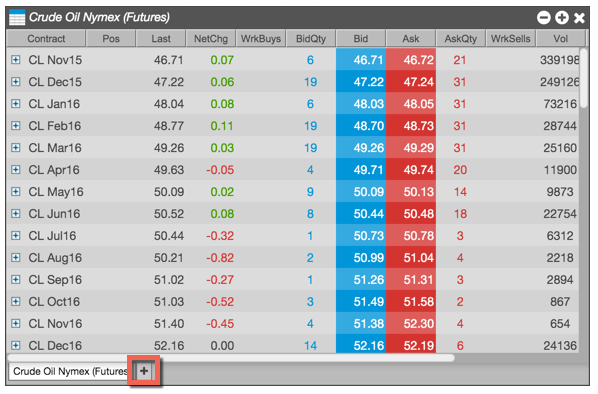
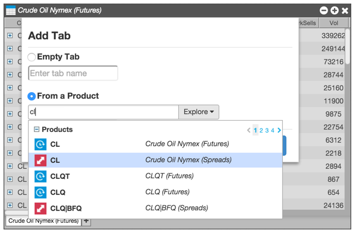
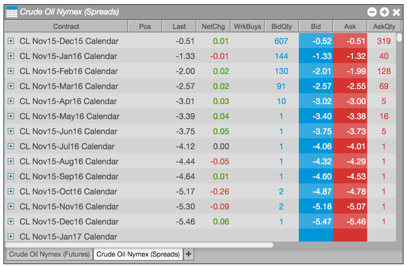
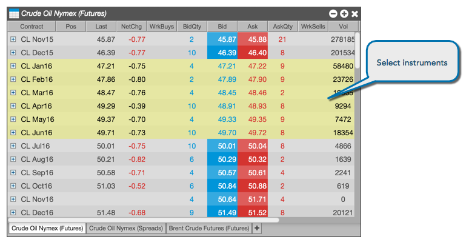
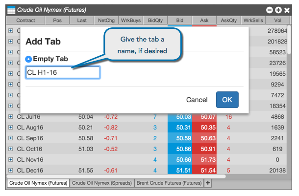
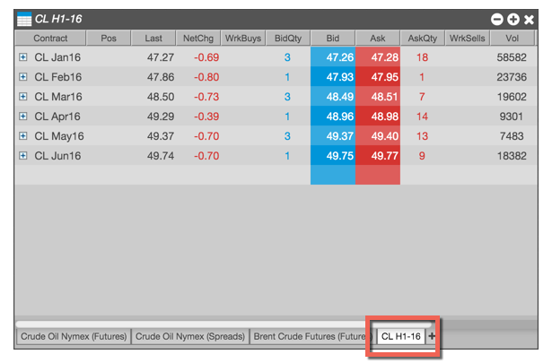

TBD
You can also add more tabs to the Market Grid to allow you to monitor different sets of instruments within the same widget.
To add a new tab:
Click the + icon.

Choose Select a product and either start typing in the field or use the explore feature to find the product you want to add.

Click OK to add the new tab populated with the available contracts for the selected product.

You can move, rename, copy, and remove tabs from the Market Grid.
To manage tabs:
To move or copy an instrument to a new tab:
Select one or more contracts you want to move or copy to a new tab.

Right-click on a selected contract, and select either Copy to new tab or Move to new tab from the context menu.
Enter a tab name, if desired, and click OK.

A new tab is created with the selected contracts.
